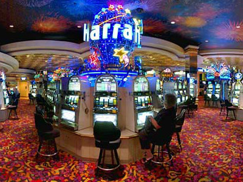

Atrações - Cassinos, Hotéis, Shows e muito mais esperam por você em Las Vegas!
Las Vegas Strip
Os principais pontos turísticos de Las Vegas são os próprios hotéis cassinos. Mesmo para quem não gosta de jogar, os hotéis cassinos em Las Vegas são enormes e possuem várias atrações temáticas para atrair hóspedes e jogadores.
Os principais hotéis ficam todos na chamada Las Vegas Strip, a principal avenida da cidade com os maiores e principais hotéis cassinos da cidade. Então reserve algumas de suas noites para passear por ela e ir entrando de hotel em hotel e conhecendo cada um. Cada hotel tem dezenas de atrações, restaurantes, baladas, cassinos, lojas e muitas coisas para fazer, então o ideal é conhecer quatro por dia. Todos são ótimos, alguns são temáticos e têm muita coisa para fazer lá dentro.
A Las Vegas Strip tem um extensão de 7km na avenida Las Vegas Boulevard, e é lá que se concentram praticamente 80% de todo o entretenimento e atrações turísticas da cidade. Os principais hotéis, shows e a maior concentração de pessoas estão nessa imensa avenida que corta Las Vegas de ponta a ponta.
Hotéis
É difícil eleger os melhores hotéis de Las Vegas. A cidade é conhecida pela variedade e pela qualidade de seus hotéis, restaurantes, shows e atrações, por isso a maioria dos serviços prestados é muito boa.
Confira abaixo os hotéis mais famosos, mais procurados e mais luxuosos, todos localizados na Las Vegas Strip, a avenida principal da cidade.
Hotel Wynn Encore
Localizado na Norte da The Strip, o Wynn é o hotel mais luxuoso da cidade. Ele possui mais de 45 andares e é formado por duas torres que possuem a mesma área comum, sendo assim uma das referências da cidade. Com mais de 10 restaurantes, todos muito luxuosos e sofisticados, o ideal é ir bem vestido e fazer reservas antes, já que as mesas são concorridas. Emende sua noite em uma das baladas do hotel, como a Tryst Nightclub, que recebem os melhores DJ's do mundo, como David Guetta e Avicii. Mesmo os quartos mais simples do hotel são cercados de mimos, como telas de LED no banheiro e outros confortos. Para as compras, o Wynn apresenta o Shopping Esplanade, que é uma opção para quem procura as melhores marcas do mundo, como Dior, Prada, Cartier, entre outras. Não perca o Le Rêve, grande espetáculo que tem como diretor aquele que idealizou todos os shows do Cirque Du Soleil em Las Vegas.
Hotel Bellagio
O Bellagio é um dos hotéis mais famosos de Las Vegas, pelo seu luxo e serviço de qualidade, e pelas suas fontes. O show das fontes do Bellagio é gratuito e atrai muitos turistas todos os dias em diversos horários, já que ele é uma bela atração tanto de dia quanto a noite. O hotel é inspirado na Itália e é muito romântico, mas também recebe bem famílias e grupos de amigos que queiram curtir a noite e o agito em Las Vegas. Os quartos são extremamente confortáveis e espaçosos. O Bellagio possui um SPA, nove piscinas e um enorme jardim botânico exótico que rende maravilhosas fotos, além do maravilhoso Cassino, um dos mais conceituados e procurados pelos turistas e toda a região. Ficar hospedado nesse hotel também é uma experiência gastronômica, já que ele dispõe de mais de 15 bares e restaurantes, e um buffet, além da famosa Balada The Bank. Para aqueles que gostam de um bom espetáculo, o Cirque Du Soleil O é uma das melhores opções de Las Vegas, e por muitos considerado o melhor show do Circo no mundo.
Hotel Caesar's Palace
O Caesar's Palace é inspirado na Roma Antiga, por isso o nome que remete ao líder romano. Ele fica ao lado do Bellagio, no centro da Strip, perto de todas as principais atrações de Las Vegas. A área das piscinas impressiona os turistas. Ela é chamada de Jardim dos Deuses, conta com seis piscinas, uma delas restrita a maiores de 21 anos, onde ocorrem as pool parties. Visite também os restaurantes dessa área, como a Cheesecake Factory e o Planet Holywood. É nesse hotel que ocorre o Absinthe Las Vegas, um dos melhores shows da cidade. Verifique também na época em que for viajar se o hotel não vai receber algum artista internacionalmente famoso. O cassino do hotel é bastante luxuoso, e as apostas são bem altas para poder entrar nos jogos.
Hotel Aria

O Aria é um dos hotéis mais recentes de Las Vegas, construído em 2009. Além de toda a tecnologia voltada para o luxo e conforto de seus hóspedes, o Aria também visa uma estada ecologicamente correta, priorizando sempre a economia de energia e outros aspectos sustentáveis. Seu enorme cassino é mundialmente famoso e já apareceu em alguns filmes. Aproveite as três enormes piscinas do hotel, além de seus 15 restaurantes e três baladas. O show Zarkana, do Circo de Soleil, que retrata um mágico que perde seus poderes, história ilustrada pelas impressionantes danças, acrobacias e músicas do espetáculo. O Aria também possui um show de fontes, bem menos conhecido que o do Bellagio.
Hotel The Venetian
O Hotel Casino Venetian é um dos mais românticos de Las Vegas. Sua decoração é inteiramente inspirada em Veneza, e em muitos momentos dá a sensação de que o visitante foi transportado para a Itália. Dentro do hotel você encontra praticamente uma cidade de atrações, que inclui um museu de cera Madame Tussaud's, a balada TAO, shows do Blue Man Group e um shopping incrível com uma Piazza San Marco legítima. O passeio de gôndola pelo Grande canal do hotel talvez seja o maior atrativo do Venetian, ideal para casais em Lua de Mel em Las Vegas ou outros visitantes que queiram curtir essa maravilhosa experiência. Não deixe de experimentar uma ótima comida italiana ou um bolo do famoso confeiteiro Buddy em um dos mais de 20 restaurantes que o hotel oferece.
Hotel Stratosphere
Stratosphere, um hotel cassino em forma de torre e é o ponto mais alto de todo o estado de Nevada. Lá em cima tem um observatório que oferece uma vista incrível da cidade, além de alguns brinquedos radicais pendurados no topo da torre. Existe um restaurante lá em cima que fica girando bem devagar e é possível comer vendo toda a cidade de Vegas lá do alto. Um passeio bem legal de fazer para ter um vista incrível da cidade.
Cassinos
Vegas é famosa por seus majestosos e enormes cassinos, que têm de tudo e são muito legais. Eles geralmente ficam dentro dos gigantescos hotéis que podem ou não estar na Strip, a maior avenida da cidade. Visitar os principais cassinos de Las Vegas é essencial para quem viaja para lá, porque eles são pontos turísticos bem importantes.
Confira abaixo quais são os melhores cassinos de Las Vegas.
Cassino Monte Carlo
O Monte Carlo em Las Vegas segue um estilo europeu na construção, inspirado em Mônaco, mas seu cassino é tipicamente norte-americano. Seu clube de caça-níquéis supera a maioria dos cassinos, e o clima é bem agradável. A área total do cassino é de 8361 metros quadrados, com 2200 máquinas caça-níquel. Ele fica de frente para o MGM, na parte sul da Strip. Não deixe de dar uma passada por aqui enquanto viaja por Vegas.
Cassino Aria Resort
O Aria em Las Vegas tem todo um conceito de tecnologia, é um dos hotéis mais novos da cidade. Ele também é um dos hotéis mais sustentáveis e ecológicos de Las Vegas e do mundo. Toda sua estrutura foi projetada visando a economia do consumo de energia. Seu cassino oferece jogos de alta tecnologia e com telas touch, que mostram os resultados dos jogos, outras opções de entretenimento, mapas interativos, cardápios de bebidas e restaurantes e muito mais. Você também pode ir em uma das muitas salas privativas do cassino, que são ótimas.
Cassino Rampart
O Rampart é um cassino bem sofisticado, que proporciona uma experiência bem acolhedora para seus clientes. Ele fica dentro do JW Marriot Hotel, que está a poucos minutos de distância da Strip. Ele tem uma grande variedade de caça-níqueis, pela qual é famoso, e também crupiês especializados, aqueles funcionários dos cassinos que auxiliam os jogadores. Do Rampart já saiu uma impressionante quantia de 14 milhões de dólares, de uma máquina caça-níqueis, para um só jogador. O buffet que tem por perto do cassino é bem gostoso e vale a pena comer por lá.
Cassino Harrah’s
O Cassino Harrah’s é da rede do Caesars Palace, que tem muitas propriedades nos EUA. O Harrah’s se destaca entre elas, no seu serviço, ambiente e comida. Lá está um dos melhores clubes de caça-níqueis no quesito preço. O legal é que se você tiver o cartão fidelidade do Caesars, dá para jogar com algumas preferências em qualquer estabelecimento deles nos Estados Unidos, e aí para quem gosta de jogar é excelente. O Hotel e Cassino Harrah's fica perto dos principais hotéis da Strip em Las Vegas, sua localização é excelente.
Cassino Sunset Station
O Sunset Station fica bem em frente ao Shopping Galleria At Sunset, no centro de Las Vegas, e é uma boa opção para quem fugir um pouco do agito e badalação da Strip. Ele sempre foi frequentado preferencialmente por moradores da cidade, e recentemente alguns turistas o descobriram. Seu espaço é bem iluminado e ventilado. Para quem está viajando em família, o cassino é excelente, ele tem uma creche, a Kids’ Quest, onde as crianças podem ficar enquanto seus pais jogam. O Cassino tem 2400 máquinas de videopôquer, 39 mesas de jogos que incluem Blackjack, roleta e dados, salão de keno, salão de bingo e salão de apostas em corridas e esportes com 300 lugares.
Cassino Golden Nugget
O Golden Nugget em Las Vegas é um dos cassinos mais antigos e tradicionais da cidade. Localizado na icônica Fremont Street, ele tem um ambiente bem mais favorável e muitos clientes fiéis, quando comparado aos seus concorrentes do centro. O local é bem legal e uma ótima opção para quem quer jogar em um grande cassino que tenha apostas mais baixas e não seja tão caro. O seu cassino é um dos mais divertidos de Las Vegas e tem centenas de opções de caça níqueis e jogos de mesa. Além disso, o Golden Nugget já apareceu em diversos filmes e é super famoso na cidade, então mesmo que você não pretenda jogar por lá, vale a pena conhecê-lo.
Cassino Fiesta Rancho

Esse cassino tem a decoração mais simples, mas é conhecido por ter as máquinas caça-níqueis e de videopôquer mais generosas da região. Ele fica longe da agitação da Strip, bem agradável e amigável. O local tem lanchonetes bem perto do cassino e um buffet com mais de 600 lugares que oferece uma variedade gastronômica bem grande. Os apostadores podem jogar sem nem sair do carro.
Cassino Santa Fe
O Santa Fe é o cassino ideal para os claustrofóbicos, com seu teto alto e grupos pequenos de máquinas espalhados. Ele é bem antigo mas foi reformado recentemente e seu estacionamento aumentou, além de ter ganho uma estrutura supermoderna para apostas em corridas e outros esportes. O Santa Fe também tem novos restaurantes, como o Charcoal Room Setakhouse, uma típica casa de carnes norte-americana.
Cassino M Resort
Esse cassino fica a 16 quilômetros ao sul da Strip, fora da parte mais movimentada, mas ainda na Las Vegas Boulevard, e está a 120 metros de altura, proporcionando lindas vistas da cidade. Ele é o mais alto de Las Vegas, é um hotel todo envidraçado, com jogos em salas. Tem também, ao lado da piscina, videopôquer, salas de pôquer com plateia, salões para altas apostas e caça-níqueis.
Para vizualizar mais atrações para curtir em Vegas acesse nossa página de roteiro.